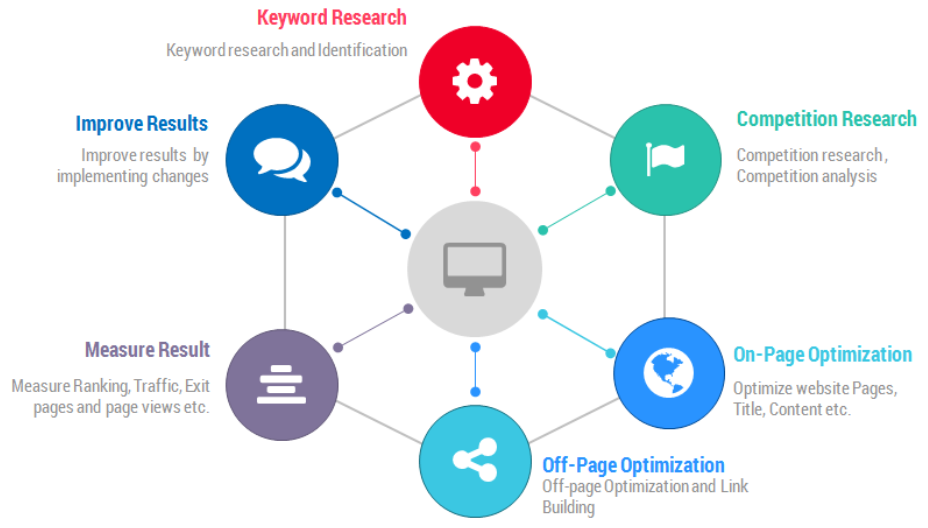
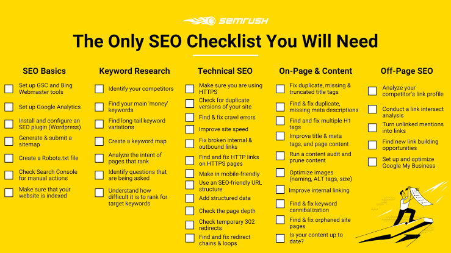
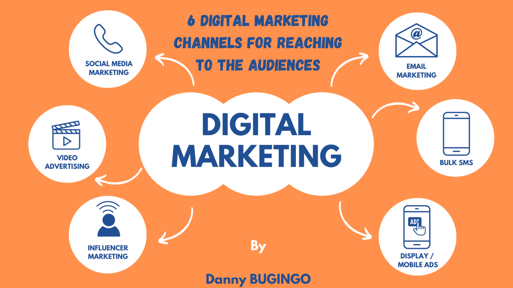

Digital Marketing & SEO Strategies
A comprehensive guide to SEO, online ads, and digital marketing for your business.
What is SEO?

SEO (Search Engine Optimization) is the process of optimizing your website to increase its visibility when people search for products or services related to your business in search engines like Google and Bing.
- On-Page SEO: Optimizing individual pages (keywords, meta tags, headings, internal links).
- Off-Page SEO: Building backlinks and external signals to improve authority.
- Technical SEO: Enhancing site speed, mobile-friendliness, and crawlability.
Example: If you run a bakery in London, using keywords like "best bakery in London" in your content and meta descriptions can help your site appear higher in search results.

Basic Steps to Improve SEO:
- Research relevant keywords for your business.
- Optimize your website content and meta tags.
- Improve your website’s loading speed and mobile usability.
- Build quality backlinks from reputable sites.
- Regularly update your content to keep it fresh.
Google Ads

Google Ads is an online advertising platform that allows you to display ads on Google’s search results and partner sites. It’s a pay-per-click (PPC) model, meaning you only pay when someone clicks your ad.
How Google Ads Works:
- Set up a campaign and choose your target audience (location, age, interests).
- Select keywords relevant to your product or service.
- Create compelling ad copy and visuals.
- Set your budget and bid for ad placements.
- Monitor performance and optimize your campaigns.
Example: A local plumber can use Google Ads to appear at the top of search results when someone searches "emergency plumber near me".

Meta Ads (Facebook & Instagram)

Meta Ads allow you to advertise across Facebook, Instagram, Messenger, and the Meta Audience Network. These platforms offer powerful targeting options based on user interests, demographics, and behaviors.
Steps to Launch a Meta Ad Campaign:
- Choose your campaign objective (brand awareness, website traffic, conversions).
- Define your audience by location, age, gender, interests, and behaviors.
- Set your budget and schedule.
- Create engaging ad creatives (images, videos, carousel, etc.).
- Review and launch your campaign.
Example: An online clothing store can target Instagram users aged 18-35 interested in fashion trends.

Facebook Groups & Community Marketing

Facebook Groups are communities where members share interests and information. Businesses can join relevant groups to engage with potential customers, share expertise, and build trust.
Tips for Effective Group Marketing:
- Join groups related to your industry or target audience.
- Participate in discussions and answer questions genuinely.
- Share valuable content (not just promotions).
- Respect group rules and avoid spamming.
Example: A fitness coach can join local health groups to share workout tips and promote their coaching services.

Other Digital Marketing Strategies

- Email Marketing: Build an email list and send newsletters to nurture leads.
- Content Marketing: Create blog posts, guides, and videos to attract and educate your audience.
- Influencer Marketing: Partner with influencers in your niche to reach new audiences.
- Analytics & Tracking: Use tools like Google Analytics to measure performance and adjust strategies.